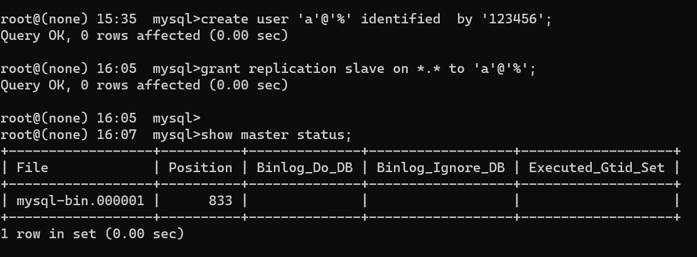
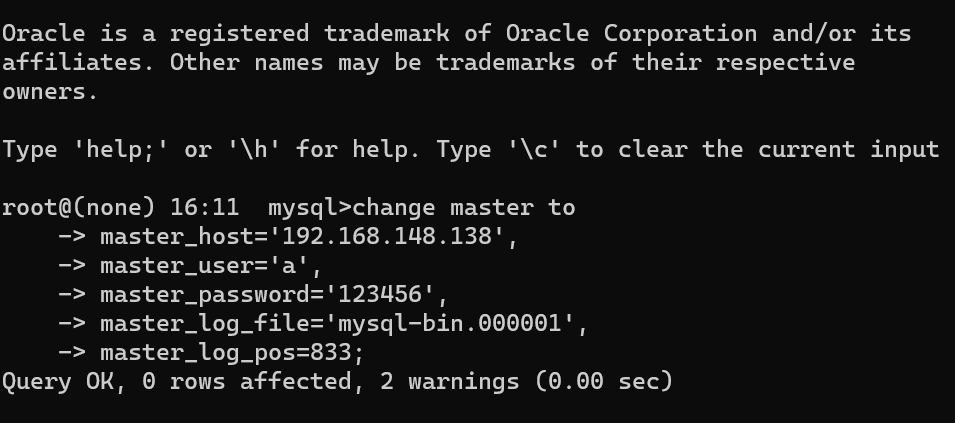
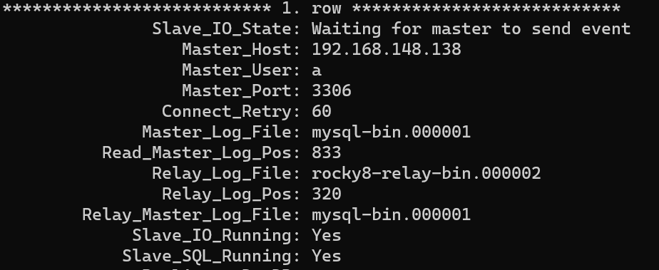
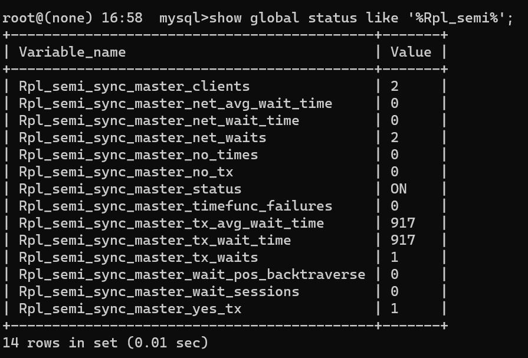
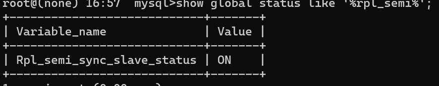
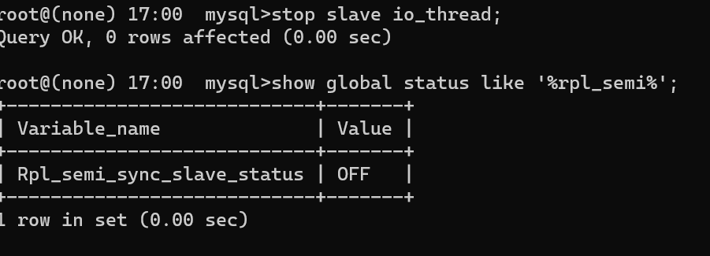
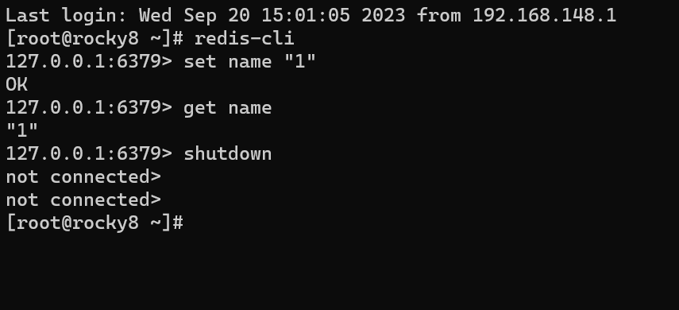
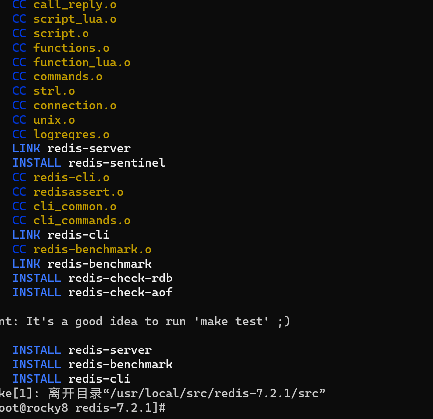
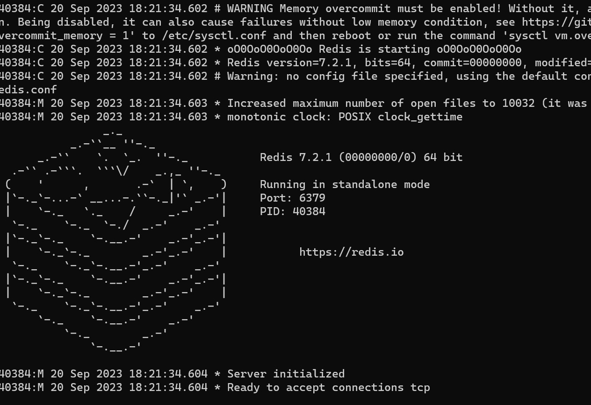

9.2
背景
1.mysql
4.主从复制
主从复制是指一台服务器充当主数据库服务器，另一台或多台服务器充当从数据库服务器，主服务器中的数据自动复制到从服务器之中。对于多级复制，数据库服务器即可充当主机，也可充当从机。MySQL主从复制的基础是主服务器对数据库修改记录二进制日志，从服务器通过主服务器的二进制日志自动执行更新。
一般而言，主从复制的步骤的一般为：
1.主库的更新事件被写到主库的binlog日志里；
2.从库发起连接，连接到主库;
3.从主库创建一个binlog dump 线程，把binlog的内容发送到从库；
4.从库启动之后，创建一个I/O线程，读取主库传过来的binlog内容并写入到relay log；
5.从库再创建一个SQL线程，从relaylog里面读取内容，执行读取到的更新事件，更新内容
本次进行一次环境搭建，测试异步复制及半同步
1.异步复制
1.环境配置
更改/etc/下my.cnf文件，在其[mysqld]段下加入相应代码
1 | |
开启二进制日志，并指定服务id,该id本次为主库
修改完后重启服务
1 | |
2.创建从库专用用户
1 | |
1 | |

3.将从库与主库连接，启动复制
在从库上执行change master to,指定主库位置以及建立的专用用户
1 | |

开启slave服务，确认情况
1 | |
1 | |

2.半同步复制
mysql的半同步复制依靠于Semi-sync插件，在加载完后每一个事务需等待从库接收日志后才返回给主库。而其在备库超时后，会自动降级为异步复制，该复制主要是为了保证数据的一致性。
1.安装semi-sync插件
主库安装
1 | |
临时启动
1 | |
从库安装
1 | |
临时启动
1 | |
设置完后，重新启动IO
1 | |
1 | |
确认半同步是否运行
主库：
1 | |

从库：

2.测试
关闭从库节点
1 | |
主库新加一个数据库
1 | |
确认同步情况
1 | |

2.redis
Redis 是一个高性能的key-value数据库，可以用来做数据库、缓存等场景，是一种NoSQL的数据库。其通常将全部的数据存储在内存中，支持主从同步。数据可以从主服务器向任意数量的从服务器上同步，执行效率也较高。
1.redis安装
一般可以直接指令安装或编译安装
1.1指令安装
1 | |
1 | |
1 | |

1.2编译安装
1 | |
1 | |
1 | |
1 | |
1 | |

1 | |

确定可以启动
本博客所有文章除特别声明外，均采用 CC BY-SA 4.0 协议 ，转载请注明出处！